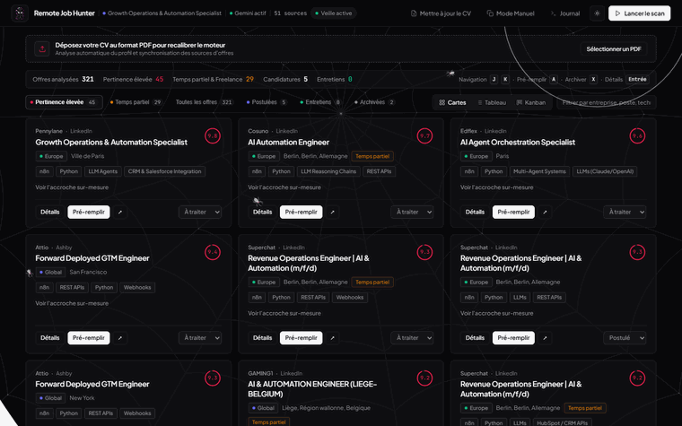

The engineering problem
Building an autonomous job scouting tool that works for anyone—not just a hardcoded developer profile—exposes three systemic failure modes:
- The Keyword & Seniority False-Positive Trap: Naive substring matching triggers `"ai"` inside *"maintain"* or misses `"C++"` due to word-boundary bugs, while LLMs routinely award `9+/10` scores to Staff/Principal roles at frontier labs because the stack matches, ignoring `8+ years` or `US-only` disqualifiers.
- The API Key Barrier for Consumer Users: Most people already pay $20/month for ChatGPT Plus, Claude Pro, or Gemini Advanced, but do not have a developer billing account or API key—and when a chat LLM output truncates at token limits, standard JSON parsers throw away the entire batch.
- State Corruption Across Re-Scans: Blind `INSERT OR REPLACE` queries overwrite active user pipeline states (`applied`, `interview`, `archived`) back to `new` on the next scheduled scan.
System architecture & interactive topology
Packaged as an installable Python CLI (pipx install remote-job-hunter) and Docker container with four core architectural layers:
- Declarative Profile Compiler (
rjh/profile.py&rjh/heuristic.py): Validatesprofile.yamlwithdifflibtypo suggestions and compiles terms into accent-insensitive whole-word lookaround regexes ((?<![a-z0-9])...(?![a-z0-9])) plus explainable hard gates. - Unified 2-Pass & Zero-API-Key Analyzer (
rjh/analysis.py): Separates cheap Pass 1 triage (~70 output tokens/offer across batches of 10) from Pass 2 dossier generation (~450 tokens/offer only onapplyverdicts), sharing the exact same code path between live API providers and copy-paste Manual Mode tickets. - 3-Key SQLite WAL Deduplication (
rjh/scanner.py): Deduplicates across primaryid, cross-sourcededupe_key, and canonical URL while protecting lifecycle statuses viaON CONFLICT(id) DO UPDATE CASE. - 1-Page A4 ATS Tailor & Tri-View Command Center (
cv_tailor.py&dashboard_server.py): Renders single-column A4 PDFs with a built-in 100/100 ATS parser audit, served alongside a FastAPI Command Center with Grid/Table/Kanban views andJ/K/Enterkeyboard navigation.

Click any node in the SVG diagram or list below to inspect its payload contract, latency SLA, and retry policy.
Select any node in the pipeline to examine its architectural responsibility, input/output schema types, p95 execution latency, and error recovery policy.
Real code & schema inspector
Extracted directly from the open-source repository (manny-ruesch/remote-job-hunter). Switch tabs to inspect the lookaround regex compiler, unified scan orchestrator, and 2-pass LLM / Manual Mode analyzer.
"""Pré-tri heuristique PILOTÉ PAR LE PROFIL.
Plus aucun dictionnaire de mots-clés dans le code : `ProfileScorer(profile)` compile le
profil.yaml en matchers (mots entiers, insensibles à la casse et aux accents), en gates
(rejet / pénalité) et produit un score 0-100 EXPLICABLE (liste de raisons).
Corrige par construction les défauts de l'ancien scorer :
* « ai » ne matche plus dans « maintain » (mots entiers), * « c++ » est bien détecté,
* « 5+ years » / « 3-5 ans d'expérience » sont lus, * « Remote - US » est écarté si non éligible.
"""
from __future__ import annotations
import re
from dataclasses import dataclass, field
from typing import Callable
from .models import Job
from .profile import Gate, Profile
from .textutil import norm
# ============================================================ TermSet ======================
class TermSet:
"""Ensemble de termes recherchés comme MOTS ENTIERS dans un texte déjà normalisé (norm()).
Un terme d'au moins 4 lettres accepte un pluriel / féminin simple (e, s, es) :
« webhook » trouve « webhooks », « infirmier » trouve « infirmière » (norm -> « infirmiere »).
"""
def __init__(self, terms):
cleaned = [norm(t) for t in terms if t and str(t).strip()]
self.terms = sorted(set(cleaned))
self._lookup = {re.sub(r"\s+", " ", t): t for t in self.terms}
self._rx = None
if self.terms:
def pattern(t: str) -> str:
body = re.escape(t).replace(r"\ ", r"\s+")
return body + ("e?s?" if len(t) >= 4 and t[-1].isalpha() else "")
alts = "|".join(pattern(t) for t in sorted(self.terms, key=len, reverse=True))
# Lookarounds sur [a-z0-9] : « c++ », « c# », « node.js », « n8n » fonctionnent ;
# « ai » ne matche plus dans « maintain ».
self._rx = re.compile(rf"(?<![a-z0-9])(?:{alts})(?![a-z0-9])")
def _canon(self, matched: str) -> str:
txt = re.sub(r"\s+", " ", matched)
if txt in self._lookup:
return self._lookup[txt]
for suffix in ("es", "s", "e"):
if txt.endswith(suffix) and txt[: -len(suffix)] in self._lookup:
return self._lookup[txt[: -len(suffix)]]
return txt
def find(self, text_norm: str) -> set[str]:
if not self._rx or not text_norm:
return set()
return {self._canon(m.group(0)) for m in self._rx.finditer(text_norm)}
def __bool__(self) -> bool:
return bool(self.terms)
# ============================================================ Géographie ===================
EU_MEMBERS = {
"AT", "BE", "BG", "HR", "CY", "CZ", "DK", "EE", "FI", "FR", "DE", "GR", "HU", "IE", "IT",
"LV", "LT", "LU", "MT", "NL", "PL", "PT", "RO", "SK", "SI", "ES", "SE",
}
REGIONS = {"EU": EU_MEMBERS}
_COUNTRIES = {
"FR": ["france"], "DE": ["germany", "allemagne", "deutschland"], "ES": ["spain", "espagne", "espana"],
"IT": ["italy", "italie", "italia"], "PT": ["portugal"], "NL": ["netherlands", "pays-bas", "pays bas", "holland"],
"BE": ["belgium", "belgique", "belgie"], "LU": ["luxembourg"], "IE": ["ireland", "irlande"],
"AT": ["austria", "autriche", "osterreich"], "PL": ["poland", "pologne"], "SE": ["sweden", "suede"],
"DK": ["denmark", "danemark"], "FI": ["finland", "finlande"], "CZ": ["czechia", "czech republic", "tchequie"],
"RO": ["romania", "roumanie"], "HU": ["hungary", "hongrie"], "GR": ["greece", "grece"],
"BG": ["bulgaria", "bulgarie"], "HR": ["croatia", "croatie"], "SK": ["slovakia", "slovaquie"],
"SI": ["slovenia", "slovenie"], "EE": ["estonia", "estonie"], "LV": ["latvia", "lettonie"],
"LT": ["lithuania", "lituanie"], "CY": ["cyprus", "chypre"], "MT": ["malta", "malte"],
"UK": ["united kingdom", "uk", "u.k.", "great britain", "england", "scotland", "wales", "royaume-uni", "royaume uni"],
"CH": ["switzerland", "suisse", "schweiz"], "NO": ["norway", "norvege"],
"US": ["united states", "usa", "u.s.a", "u.s.", "us", "etats-unis", "etats unis"],
"CA": ["canada"], "IN": ["india", "inde"], "AU": ["australia", "australie"], "NZ": ["new zealand"],
"BR": ["brazil", "bresil"], "MX": ["mexico", "mexique"], "AR": ["argentina"], "CO": ["colombia"],
"SG": ["singapore", "singapour"], "JP": ["japan", "japon"], "IL": ["israel"], "AE": ["united arab emirates", "uae"],
"ZA": ["south africa"], "PH": ["philippines"], "PK": ["pakistan"], "NG": ["nigeria"], "ID": ["indonesia"],
}
_CITIES = {
"FR": ["paris", "lyon", "marseille", "toulouse", "bordeaux", "nantes", "lille", "strasbourg", "nice", "montpellier", "rennes", "pau"],
"DE": ["berlin", "munich", "munchen", "hamburg", "frankfurt", "cologne", "koln", "stuttgart", "dusseldorf"],
"UK": ["london", "manchester", "edinburgh", "bristol", "birmingham"], "NL": ["amsterdam", "rotterdam", "utrecht"],
"IE": ["dublin"], "ES": ["madrid", "barcelona", "valencia"], "PT": ["lisbon", "lisboa", "porto"],
"IT": ["milan", "milano", "rome", "roma"], "BE": ["brussels", "bruxelles"], "CH": ["zurich", "geneva", "geneve"],
"AT": ["vienna", "wien"], "PL": ["warsaw", "krakow"], "SE": ["stockholm"], "DK": ["copenhagen"],
"NO": ["oslo"], "FI": ["helsinki"], "CZ": ["prague"],
"US": ["new york", "san francisco", "los angeles", "seattle", "austin", "boston", "chicago", "denver",
"miami", "atlanta", "palo alto", "mountain view", "san jose", "washington dc", "san diego", "portland"],
"CA": ["toronto", "vancouver", "montreal", "ottawa"], "IN": ["bangalore", "bengaluru", "mumbai", "delhi", "hyderabad", "pune"],
"AU": ["sydney", "melbourne"], "SG": [], "IL": ["tel aviv"], "AE": ["dubai"], "BR": ["sao paulo"], "MX": ["mexico city"],
}
_US_STATES = [
"alabama", "alaska", "arizona", "arkansas", "california", "colorado", "connecticut", "delaware", "florida",
"georgia", "hawaii", "idaho", "illinois", "indiana", "iowa", "kansas", "kentucky", "louisiana", "maine",
"maryland", "massachusetts", "michigan", "minnesota", "mississippi", "missouri", "montana", "nebraska",
Interactive dry-run simulator
Select a test scenario and trigger a deterministic dry-run execution across the 6-stage pipeline to inspect real-time logs, gate decisions, and output payloads.
Choose a scenario below or click "Run Dry-Run Simulation" to step through the scouting pipeline and inspect the resulting JSON output contract.
Polls 9 ATS/job feeds concurrently, filters 142 raw postings down to 10 high-density matches via ProfileScorer in 4ms, runs 2-pass LLM evaluation, and prepares 1-page A4 ATS-safe PDFs.
{
"scan_id": "rjh-scan-20261015",
"sources_polled": 9,
"raw_fetched": 142,
"new_unscreened": 28,
"passed_heuristic": 10,
"hot_matches": [
{
"id": "ashby_workhero_ai_ops",
"source": "Ashby \u00b7 WorkHero",
"title": "AI Automation & Workflow Engineer (n8n / Python)",
"location": "Remote \u00b7 EU Eligible",
"fit_score": 9.4,
"verdict": "apply",
"tech_match": [
"n8n",
"Python",
"FastAPI",
"Webhooks",
"LLMs"
],
"ats_cv_audit": "100/100 (1-Page A4 Verified)"
}
]
}
Production resilience & edge-case handling
Designed around strict defensive boundaries so untrusted job descriptions, revoked API tokens, or truncated LLM replies never corrupt the local database.
Untrusted JD Isolation
Scraped job descriptions are wrapped inside explicit <job>...</job> tags with internal code fences and closing tags sanitized, preventing hostile postings from hijacking fit scores.
Zero-Loss Manual & API Parsing
If a chat LLM or API response cuts off mid-JSON, salvage_items() extracts every complete evaluation, commits them to SQLite, and spawns a child ticket for only the remaining IDs.
Lifecycle Status Protection
Uses PRAGMA journal_mode = WAL and ON CONFLICT(id) DO UPDATE CASE so re-scans never overwrite roles already marked applied, interview, or archived.
2-Pass Triage + Dossier Split vs. Single-Pass Full Generation
Generating a 150-word pitch, Mermaid diagram, and cold DM for every scraped posting wastes 85% of output tokens on roles the candidate will skip. Splitting evaluation into a lightweight Pass 1 triage (~70 output tokens/job) and running Pass 2 dossiers (~450 tokens/job) strictly on apply verdicts cuts token usage by 6x and makes 10-job copy-paste batches fit comfortably in a single consumer chat turn.
TRADE-OFF Adds one extra sequential round-trip on hot matches, in exchange for an 84% reduction in token footprint and Zero-API-Key compatibility.
Zero-Score Failure Masking on API 429 / 401 Errors
In early iterations, a transient rate-limit or expired API key defaulted to fit_score = 0.0 and marked the row as screened, permanently hiding valid roles from future runs.
FIX Added an explicit analysis_status column (ok | failed | pending_manual) and automatic fallback to SqliteTicketStore on LLMAuthError or ModelUnavailableError.
Architectural takeaway
A personal AI tool only becomes universal when you remove hardcoded assumptions from both ends: declarative profile.yaml compilation replaces brittle keyword lists at ingress, and a unified API/Manual batch protocol removes the developer API-key requirement at egress.